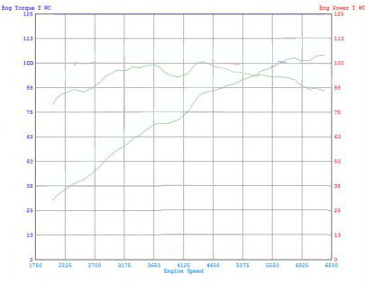
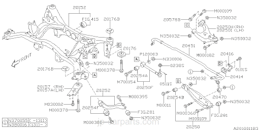
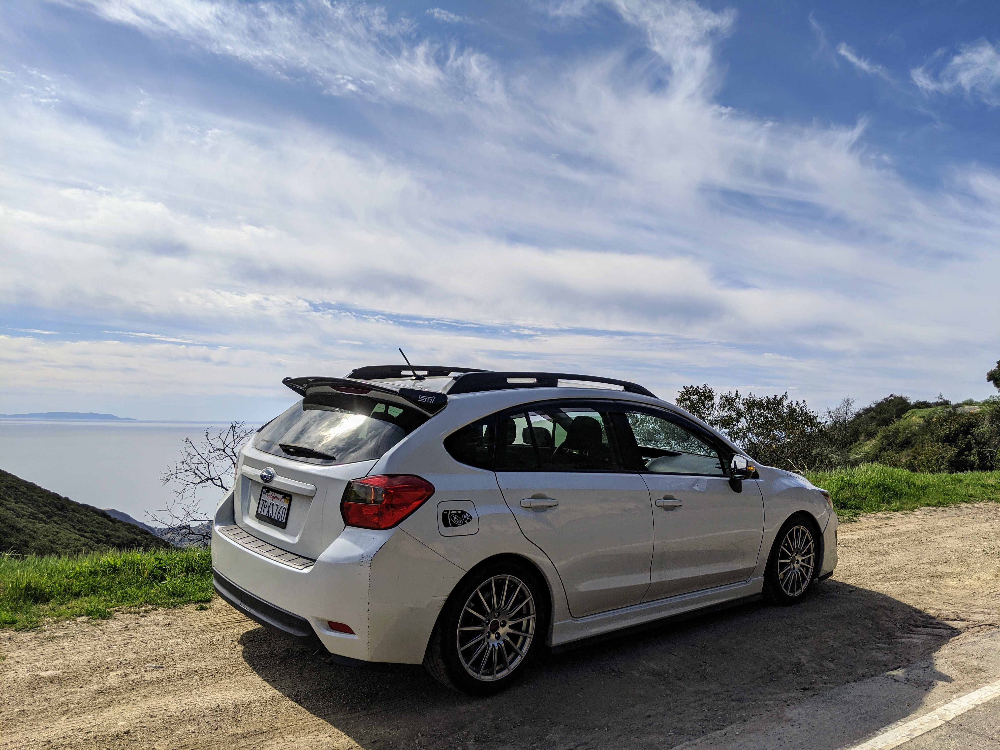

Subaru
Impreza
2016
CVT Sport
Specifications

FB20 Dyno Chart
- Engine
FB20B
- 2.0L - Naturally Aspirated DOHC
- Flat 4-cyl Boxer
- 😅148 hp @6200 rpm
- 🤣145 lb/ft @4200 rpm
- 10.5:1 compression ratio
- Est. Top Speed: 120 mph
- 0w-20w Oil
Aftermarket
- Crawford Performance - Billet Power Blocks - intake runner extensions - Est. +10hp 🙏🏽
link
- Nameless - 5" Axleback Exhaust 📣 Est. +1hp 😂
- DIY - Throated Airbox - Est. +5hp < 55mph & @5000rpm+ 🤔 link
- DIY - Charcoal Filter Delete -1wt 🏋️♂️
- Penzoil 5w-30w Oil
Throttle Happy (AU) - Rev 5A CVT Impreza 91/93 octane e-tune

| Gear |
Ratio |
| 1st |
3.581:1 |
| 2nd |
2.262:1 |
| 3rd |
1.658:1 |
| 4th |
1.208:1 |
| 5th |
0.885:1 |
| 6th |
0.618:1 |
| Reverse |
3.667:1 |
| Final Drive |
3.700:1 |
CVT Manual Drive Ratios

- Drivetrain
- Active AWD
- Electronically controlled variable hydraulic transfer clutch, default torque distribution of 60% front,
40% rear; and up to 50% / 50%.
- Vehicle Dynamics Control (VDC) with all-wheel, all-speed traction control
- Active Torque
Split - Wikipedia
Aftermarket
- Torque Solution - Steering Damper Lockdown
link
- Torque Solution - Pitchstop 75A bushings
- Perrin - Differential Lockdown Bushings
link


- Suspension
- Front: MacPherson-type struts, lower L-arms, coil springs, 22mm stabilizer bar
- Rear: Double wishbone, coil springs, 16mm stabilizer bar
Aftermarket
- Fortune Auto - 500 Series Coilovers
link
-
Subaru STI - Flexible Strut Tower Bar -
link1
link2
- Subaru - 24mm front swaybar - OEM (Crosstrek) 9% stiffer -
link
- Whiteline - 22mm adjustable rear swaybar - 38% stiffer
link


- Wheels + Brakes
- 17x7 Sport Wheels
- 10.9-in. ventilated front discs
- 10.8-in. solid rear discs
-
Subaru STI (Enkei) - 15 Spoke Flow Formed Rims 17 x 7.5 - (7 lbs lighter / wheel)
link1
link2
- Firestone - Firehawk Indy 500 225/45/R17 Tires
- Torque Solution - Master Cylinder Brace
- Pentosin - Super Dot 4 Brake fluid
Link

- Chassis
GP7
- 5 Door - Compact Hatchback
- Weight: 3,109 lbs
- Wheelbase: 104.1"
- Track (f/r): 59.4"/59.6"
- Length: 174"
- Width: 68.5"
- Height: 59.4"
- Ride Height: 5.9"
- Coefficient of drag (Cd): 0.32
Aftermarket
- Duralast - Platinum AGM Battery 680 CCA
- All-Fit - Full Body Lip Kit
- Subaru STI - Spoiler Impreza Hatcback
- Subaru - Sport Mesh Grille
link1
lin2
- Subaru Kicker - Tweeter Upgrade
link
- Lamin-X - Vinyl Fog Light Overlays
link
- Nokya - 2500K Hyper Yellow DRL/Highbeams
link
- Generic - 5000k White LED w/ inline-resistor
link
- Generic - Front License Plate Delete
link
- Generic - Ceramic Tint - 50%
link
- Generic - DIY Stitched Leather Steering wheel wrap
link
